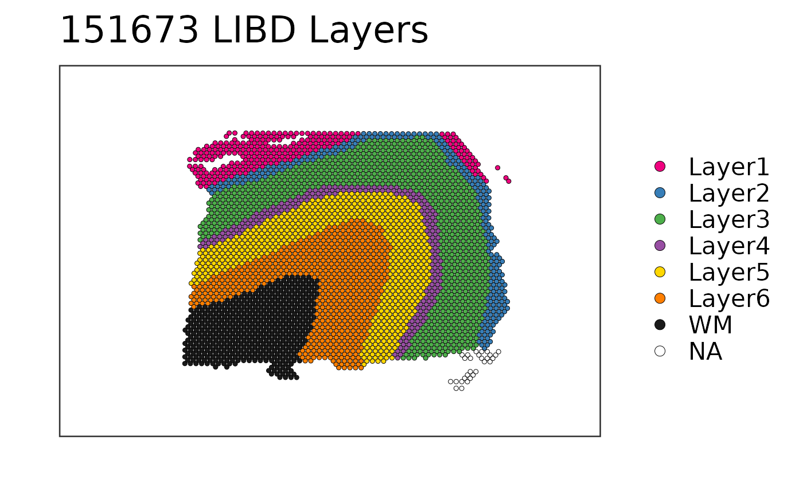

This function visualizes the clusters for one given sample at the spot-level
using (by default) the histology information on the background. To visualize
gene-level (or any continuous variable) use sce_image_gene().
sce_image_clus( sce, sampleid, clustervar, colors = c("#b2df8a", "#e41a1c", "#377eb8", "#4daf4a", "#ff7f00", "gold", "#a65628", "#999999", "black", "grey", "white", "purple"), spatial = TRUE, ... )
| sce | Defaults to the output of
|
|---|---|
| sampleid | A |
| clustervar | A |
| colors | A vector of colors to use for visualizing the clusters
from |
| spatial | A |
| ... | Passed to paste0() for making the title of the
plot following the |
A ggplot2 object.
This function subsets sce to the given sample and prepares the
data and title for sce_image_clus_p().
Other Spatial cluster visualization functions:
sce_image_clus_p(),
sce_image_grid()
if (enough_ram()) { ## Obtain the necessary data if (!exists("sce")) sce <- fetch_data("sce") ## Check the colors defined by Lukas M Weber libd_layer_colors ## Use the manual color palette by Lukas M Weber sce_image_clus( sce = sce, clustervar = "layer_guess_reordered", sampleid = "151673", colors = libd_layer_colors, ... = " LIBD Layers" ) ## Without histology sce_image_clus( sce = sce, clustervar = "layer_guess_reordered", sampleid = "151673", colors = libd_layer_colors, ... = " LIBD Layers", spatial = FALSE ) }#>#> Loading objects: #> sce